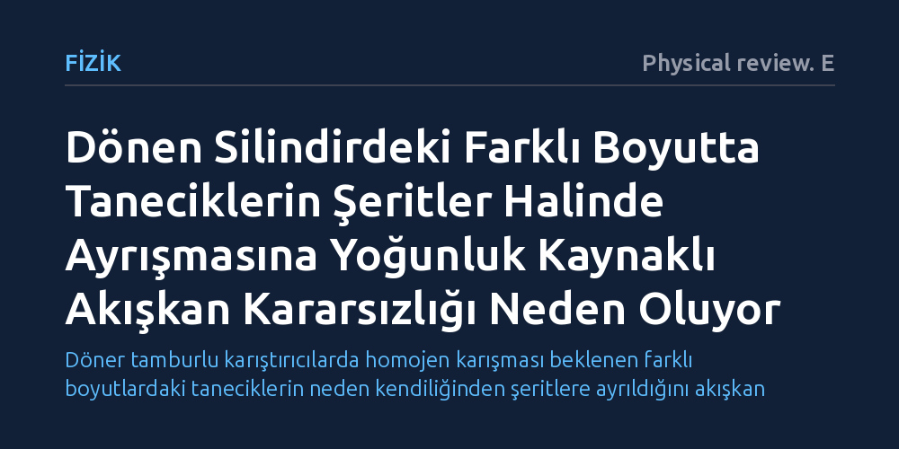

FIZIK · Physical review. E · 2026-10-16
Araştırmacılar, dönen silindirlerde farklı boyutlardaki taneciklerin neden kendiliğinden şeritler halinde ayrıştığını bilgisayar simülasyonlarıyla inceledi. Taneciklerin boyuta göre dizilip üstte daha yoğun bir karışım katmanı oluşturmasıyla tetiklenen akışkan benzeri kararsızlığın bu şeritleri oluşturduğu belirlendi.
Döner tamburlu karıştırıcılarda homojen karışması beklenen farklı boyutlardaki taneciklerin neden kendiliğinden şeritlere ayrıldığını akışkan mekaniği benzeri bir kararsızlıkla açıklıyor.

Yatay eksende dönen silindirik bir kaba farklı boyutlarda tanecikler konulduğunda sağduyu bunların birbirine iyice karışacağını söyler. Oysa tanecik fiziğinde uzun süredir bilinen şaşırtıcı bir olgu vardır: Tanecikler karışmak yerine silindirin boyu boyunca belirli aralıklarla toplanarak şeritler oluşturur. Bu durum ilaç sanayisinden kimyasal üretime ve inşaat malzemelerine kadar homojen karışım elde etmek isteyen birçok endüstriyel süreçte verimi düşüren ciddi bir problemdir.
Araştırmacıların peşine düştüğü temel soru, bu ayrışmayı başlatan mekanizmanın tam olarak ne olduğu ve şeritlerin neden yalnızca belirli tambur boyutlarında veya tanecik oranlarında ortaya çıktığıdır. Malzemenin dönme hareketi sırasında sergilediği karmaşık akış, tek başına mekanik sürtünmeyle açıklanamayan dinamik bir kararsızlığa işaret etmektedir.
Yazarlar bu karmaşık süreci incelemek için deneysel olarak gözlenmesi zor olan tanecik içi dinamikleri ayrık elemanlar yöntemi (DEM) simülasyonlarıyla modellediler. Bu sayısal yöntem, her bir taneciğin yerçekimi altındaki yuvarlanmasını, diğer taneciklerle temasını ve sürtünmesini fizik yasaları çerçevesinde tek tek hesaplar.
Çalışmada tek bir durumla yetinilmeyip çok geniş bir parametre taraması yürütüldü. Taneciklerin birbirine boyut oranı, silindirin çapı ve uzunluğu, karışımdaki türlerin oranı ve kabın doluluk seviyesi adım adım değiştirilerek ayrışma şeritlerinin hangi koşullarda oluşup hangi koşullarda kaybolduğu haritalandı.
Simülasyon sonuçları, tambur dönerken yüzeydeki akış katmanında ilk olarak radyal yani çapsal bir dizilme gerçekleştiğini gösterdi. Bu süreçte küçük ve büyük taneciklerin bir arada bulunduğu karışım bölgesi, küçük taneciklerin büyüklerin aralığındaki boşlukları doldurması sayesinde çok daha verimli paketlenir. Bu durum, karışık bölgenin hacimsel yoğunluğunu neredeyse tamamen küçük taneciklerden oluşan alt katmana kıyasla daha yüksek hale getirir.
Daha ağır ve yoğun bir katmanın daha hafif bir katmanın üzerine binmesi, fizikte 'Rayleigh-Taylor kararsızlığı' olarak adlandırılan akışkan dengesizliğini tanecikli yapıda tetikler. Ortaya çıkan bu kararsızlık malzeme içinde devridaim hücreleri yaratarak tanecikleri silindir ekseni boyunca belirli bölgelere sürükler ve düzenli şeritler oluşturur. Taneciklerin boyut farkı arttıkça aradaki boşluklar daha iyi dolar, yoğunluk farkı büyür ve ayrışma süreci daha da hızlanır.
Elde edilen bulgular, kuru tanecik sistemlerinin belirli koşullarda klasik sıvı mekaniği prensiplerine benzer kararsızlıklarla hareket edebildiğini açıkça göstermektedir. Şerit oluşumunun rastgele bir mekanik süzülme değil, yoğunluk gradyanlarının tetiklediği organize bir akış hücresi mekanizması olduğu anlaşılmaktadır.
Bu mekanizma aynı zamanda şeritlerin neden sadece belirli çalışma parametrelerinde görüldüğünü de açıklamaktadır. Yoğunluk farkını oluşturacak uygun paketlenme koşulları sağlanmadığında kararsızlık tetiklenmemekte ve şeritler belirmemektedir; bu bilgi gelecekte daha verimli endüstriyel karıştırıcılar tasarlanmasına doğrudan ışık tutmaktadır.